Avant de déployer les différentes solutions techniques du stage (serveur de backup, VM de production…), il a fallu poser des fondations solides : un hyperviseur Proxmox correctement configuré, avec une gestion des accès adaptée à l'équipe, et une connectivité sécurisée via Twingate.
Cette situation professionnelle couvre deux volets complémentaires : d'abord la configuration de Proxmox VE (groupes, utilisateurs, permissions), ensuite le déploiement du connecteur Twingate dans un conteneur LXC pour sécuriser l'accès à distance à l'ensemble de l'infrastructure du SIA.
L'ensemble a été réalisé de manière autonome, en m'appuyant sur la documentation officielle Proxmox et les scripts community-scripts de la communauté.
- Hyperviseur : Proxmox VE 9.1.1 — nœud
bde608-s07 - Kernel : Linux 6.17.2-1-pve — x86_64
- Stockage :
local(82.1 Go) ·local-lvm(792.8 Go) - Réseau : Bridge
vmbr1— sous-réseau10.129.234.0/24 - Connecteur Twingate : LXC ID 101 · Ubuntu 24.04 · Unprivileged · 1 vCPU · 1 Go RAM · 3 Go disque
- Réseau Twingate :
infrabdeinsalyon
abla · cgre · ykta
infrabdeinsalyon
bde608-s07
twingate-connector
Ubuntu-Backup
La première étape consiste à structurer les accès à Proxmox pour l'équipe du SIA. Plutôt que d'utiliser uniquement le compte root, la bonne pratique est de créer un groupe dédié avec les permissions appropriées, puis d'y rattacher les utilisateurs individuels.
Étape 1 Création du groupe Admins-SIA
Dans Datacenter → Permissions → Groups, je crée le groupe Admins-SIA qui regroupera tous les membres de l'équipe disposant d'un accès administrateur à l'infrastructure.
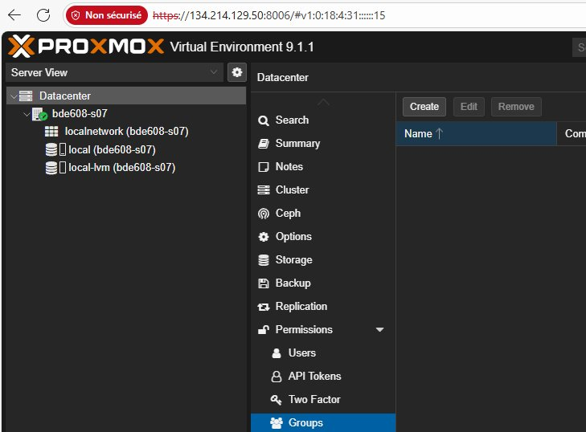
Navigation vers Datacenter → Permissions → Groups
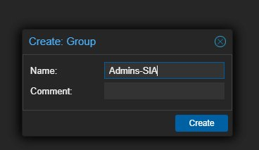
Création du groupe Admins-SIA via le formulaire
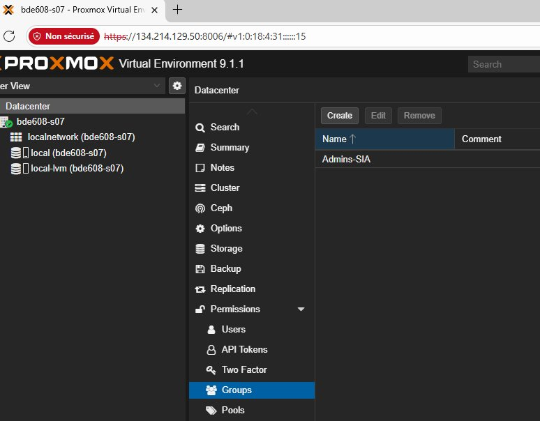
Groupe Admins-SIA visible dans la liste — création confirmée
Étape 2 Création des utilisateurs
Dans Datacenter → Permissions → Users, je crée les comptes pour chaque membre de l'équipe. Chaque utilisateur est rattaché directement au groupe Admins-SIA lors de sa création, avec le realm Proxmox VE authentication.
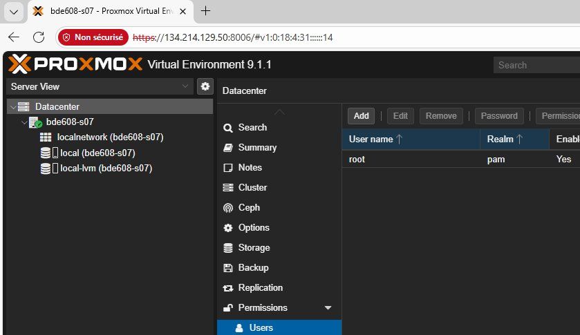
Section Users — seul root@pam existe initialement
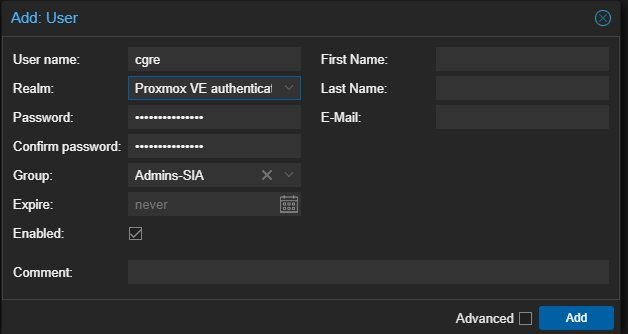
Création de l'utilisateur cgre — rattaché au groupe Admins-SIA
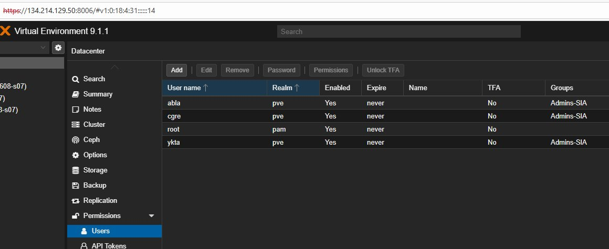
Liste finale — abla, cgre, ykta tous dans le groupe Admins-SIA
| Username | Realm | Groupe | Enabled |
|---|---|---|---|
abla | pve | Admins-SIA | ✅ Yes |
cgre | pve | Admins-SIA | ✅ Yes |
ykta | pve | Admins-SIA | ✅ Yes |
root | pam | — | ✅ Yes |
Étape 3 Attribution des permissions au groupe
J'assigne le rôle Administrator directement au groupe Admins-SIA sur le chemin / (racine). L'option Propagate est activée pour que la permission s'applique automatiquement à tous les nœuds, VMs et conteneurs.
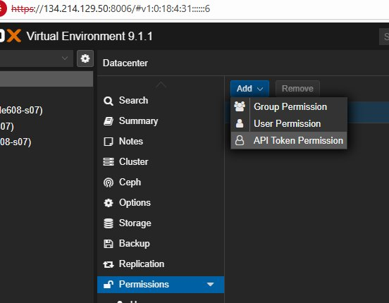
Permissions → Add → Group Permission
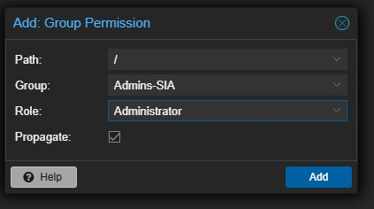
Rôle Administrator sur / — Propagate activé
Admins-SIA — sans reconfigurer les permissions.
Twingate est une solution de Zero Trust Network Access (ZTNA) qui remplace les VPN traditionnels. Au lieu d'exposer l'ensemble du réseau, Twingate ne permet l'accès qu'aux ressources spécifiquement autorisées, via un connecteur déployé dans l'infrastructure.
J'utilise les community-scripts de la communauté Proxmox, qui fournissent un script d'installation automatisé pour créer un conteneur LXC Twingate en quelques minutes.
Étape 1 Lancement du script d'installation
Depuis le shell du nœud Proxmox (bde608-s07), j'exécute la commande fournie par community-scripts :
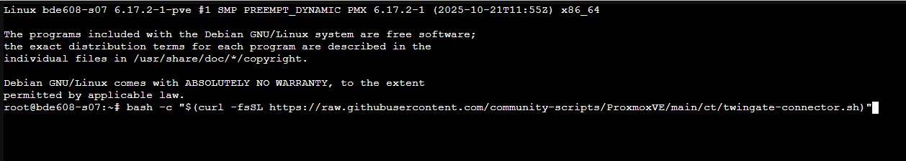
Exécution de la commande depuis le shell Proxmox — nœud bde608-s07
Étape 2 Configuration avancée du conteneur
Je choisis l'option Advanced Install pour contrôler précisément les paramètres du conteneur LXC.
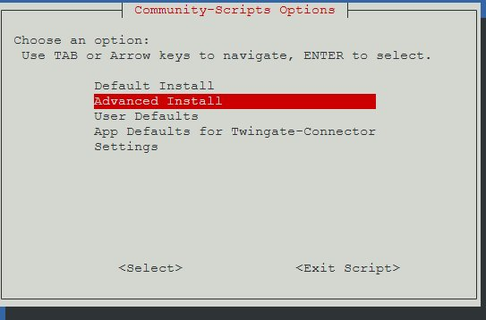
Sélection de Advanced Install
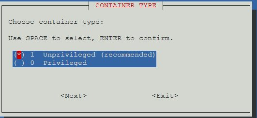
Type : Unprivileged — recommandé pour la sécurité
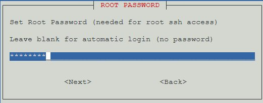
Définition du mot de passe root pour l'accès SSH
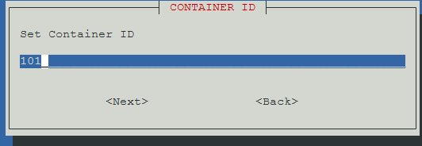
ID du conteneur : 101 — hostname : twingate-connector
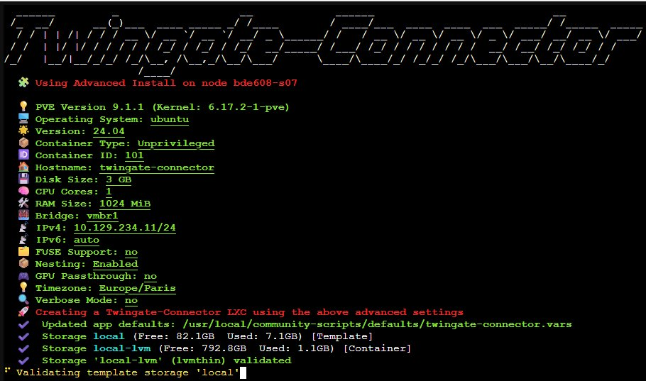
Récapitulatif de la configuration — validation avant création du conteneur
| Paramètre | Valeur |
|---|---|
| PVE Version | 9.1.1 (Kernel 6.17.2-1-pve) |
| OS / Version | Ubuntu 24.04 |
| Container Type | Unprivileged |
| Container ID | 101 |
| Hostname | twingate-connector |
| Disk / CPU / RAM | 3 GB · 1 vCPU · 1024 MiB |
| Bridge / IPv4 | vmbr1 · 10.129.234.11/24 |
| Nesting | Enabled |
| Timezone | Europe/Paris |
Étape 3 Configuration des tokens Twingate
Une fois le conteneur créé, le script demande les tokens d'authentification générés depuis la console Twingate :
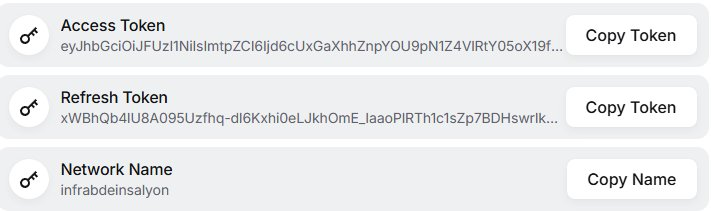
Console Twingate — Access Token, Refresh Token et Network Name
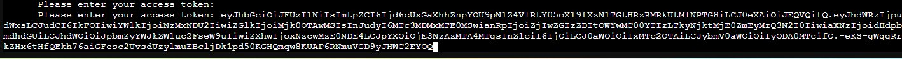
Saisie de l'Access Token dans le terminal
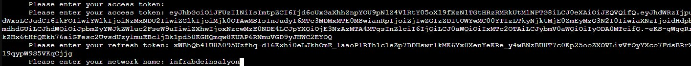
Refresh Token + Network Name infrabdeinsalyon
En parallèle, je prépare la VM qui servira de serveur de backup (voir SP2). La VM est créée via l'interface Proxmox :
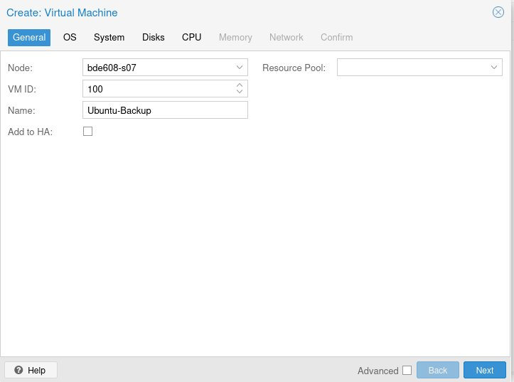
Onglet General — VM ID : 100 · Nom : Ubuntu-Backup
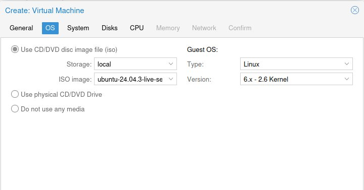
Onglet OS — ISO Ubuntu 24.04.3 · Type Linux · Kernel 6.x
Gestion des accès
Structuration des permissions Proxmox par groupes — plus maintenable et scalable qu'une gestion individuelle.
Virtualisation
Différence entre VM et conteneur LXC, choix du type unprivileged pour la sécurité, paramétrage réseau via vmbr.
Zero Trust
Compréhension du modèle ZTNA de Twingate — accès granulaire par ressource, sans VPN full-tunnel.
Autonomie
Déploiement complet d'une infrastructure depuis zéro en s'appuyant sur la documentation et les ressources communautaires.